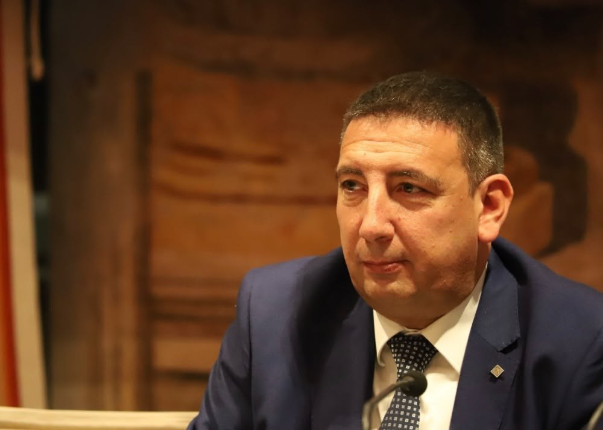

Décret Factures, feu vert de la Commission européenne : « l’Italie gagne la négociation »
Traduction non officielle du communiqué publié en italien.
Le 16 octobre 2026, en marge du Conseil européen, Giorgia Meloni annonce la conclusion de la négociation avec la Commission européenne sur le décret Factures. Pour Sigismondi, c’est une victoire de l’Italie : le prix de l’électricité produite à partir du gaz est découplé des hausses spéculatives, avec une baisse que le gouvernement estime à environ 25 % pour les familles et les entreprises.
Pourquoi c’est important: Le feu vert européen rend opérationnelle la mesure du décret Factures qui change la façon dont se forme le prix de l’électricité en Italie. L’estimation de la baisse est celle du gouvernement.

« Grâce à la force, à la ténacité et au prestige international de Giorgia Meloni, l’Italie gagne la négociation avec la Commission européenne et obtient le feu vert sur la mesure révolutionnaire du décret Factures. Ce que la gauche disait impossible est devenu réalité avec le gouvernement Meloni. Nous découplons enfin les hausses spéculatives actuelles du gaz du prix de la production d’électricité thermique : vu le fonctionnement des marchés de l’énergie, cela fera baisser en cascade le prix de toute l’électricité, en rendant pleinement opérationnel le décret Factures et en réduisant d’environ 25 % le coût pour les familles et les entreprises.
C’est une victoire sur toute la ligne parce que, comme l’a souligné la présidente du Conseil elle-même, nous ne sommes pas là pour défendre les règles contre la réalité, nous sommes là pour défendre les citoyens contre les mauvaises règles. »
C’est ce que déclare le sénateur de Fratelli d’Italia Etelwardo Sigismondi, chef de groupe FdI à la commission de l’Environnement du Sénat.
Titre original du communiqué : Énergie, Sigismondi (FdI): avec Meloni, l’Italie gagne la négociation avec la Commission européenne